🎯 Visão geral
A NR-13 exige que caldeiras e vasos de pressão sejam inspecionados por um profissional legalmente habilitado (PLH), dentro de prazos, e que a empresa guarde a documentação de cada equipamento: prontuário, registro de segurança, relatórios de inspeção e certificados dos dispositivos. O Sistema NR13 organiza esse trabalho e gera esses documentos a partir do que foi cadastrado e medido.
Quatro ideias explicam quase tudo no sistema:
- Tudo pertence a um equipamento, identificado pela TAG. Ficha, memorial, inspeções, relatórios, prontuário, registros e calibrações são sempre de uma TAG.
- Campo e escritório são dois tempos. No celular você preenche os ensaios da inspeção; no computador, gera o relatório, que puxa sozinho os dados de campo, da ficha, do memorial, da sua empresa e do cliente.
- Rascunho é trabalho; finalizado é documento. Enquanto é rascunho, tudo se edita. Ao finalizar, o sistema gera o PDF definitivo, calcula o código de verificação (SHA-256) e tranca o arquivo.
- O sistema funciona sem internet. O que você salva fica no aparelho e sobe sozinho para o servidor quando a conexão volta.
🗺️ O fluxo completo
A ordem do trabalho para cada equipamento. Cada caixa é uma etapa; embaixo, o que ela produz.
Em paralelo, a qualquer momento: o prontuário (montado no sistema ou anexado em PDF), os registros de segurança (manutenções, reparos, trocas de dispositivo) e as calibrações dos manômetros e válvulas do equipamento.
🚀 Primeiros passos
No primeiro acesso, o quadro “Comece por aqui” aparece no canto da tela com sete passos. Cada passo só é marcado quando o dado existe de verdade — não basta abrir a tela.
- Cadastre os dados da sua empresa em Meus dados: razão social, CNPJ, endereço e a logo, que saem no cabeçalho de todos os documentos.
- Cadastre a equipe e o engenheiro responsável em Equipe, com CREA e a imagem da assinatura.
- Cadastre um cliente em Clientes — a empresa dona do equipamento, que vira o contratante nos documentos.
- Cadastre um equipamento em Equipamentos e complete a ficha, o memorial e a categoria.
- Crie uma inspeção em Inspeções e preencha os ensaios em campo.
- Gere o primeiro relatório em Relatórios.
- Agende um serviço na Agenda.
Com os sete feitos, aparece “Tudo pronto!” e o quadro pode ser fechado em Entendi.
🧭 O menu
O menu lateral é dividido em grupos. Os grupos recolhem com um clique, e o botão ☰ no topo encolhe o menu para só os ícones (no celular, ele abre o menu como gaveta).
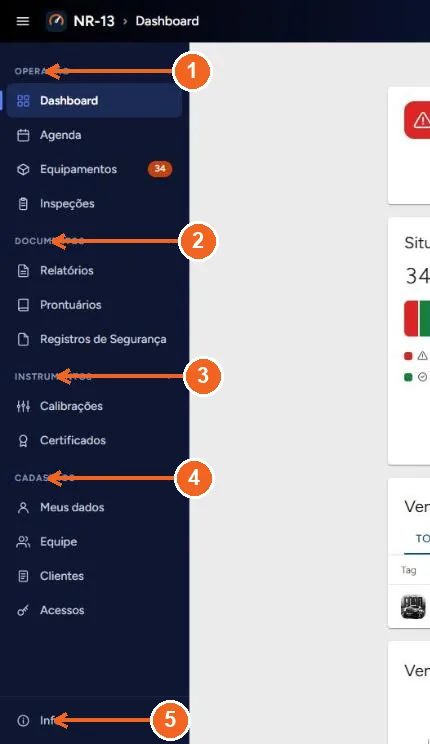
- Operação — Dashboard, Agenda, Equipamentos (com a contagem) e Inspeções.
- Documentos — Relatórios, Prontuários e Registros de Segurança.
- Instrumentos — Calibrações (acessórios de cada equipamento) e Certificados (padrões de medição da empresa).
- Cadastros — Meus dados, Equipe, Clientes e Acessos. Meus dados e Acessos só aparecem para a conta principal.
- Info — a central de ajuda, visível para todos os acessos.
👥 Quem faz o quê
A conta que contratou o sistema é a conta principal (mestre). Ela cria logins para a equipe em Acessos e marca o que cada um pode ver. Os itens que a pessoa não pode usar somem do menu.
Role para o lado para ver a tabela inteira
| Acesso | O que faz no sistema |
|---|---|
| Administrador (conta principal) | Tudo, inclusive Meus dados (dados e logo da empresa) e Acessos (logins da equipe e dos clientes). |
| Gerente | Gerencia os equipamentos e vê quase tudo, exceto Meus dados e Acessos. |
| Inspetor | Preenche inspeções em campo. Não vê as fichas nem gera relatórios. |
| Personalizado | Você escolhe módulo por módulo o que o login pode ver e usar. |
| Cliente | Só o Portal do Cliente: consulta, sem editar, os equipamentos e documentos finalizados da empresa dele. |
🔐 Sessão única: a mesma conta não fica aberta em dois aparelhos ao mesmo tempo. Ao entrar em outro aparelho, o anterior é desconectado com o aviso “Sua sessão foi encerrada”. Por isso, crie um login para cada pessoa.
✍️ Quem assina os documentos não precisa ter login. Engenheiros e técnicos que assinam são cadastrados em Equipe; os logins de acesso ao sistema são outra coisa, criados em Acessos.
📊 Dashboard
A primeira tela depois do login. Mostra os prazos de toda a empresa: inspeções dos equipamentos, calibrações dos acessórios e validade dos certificados dos padrões.
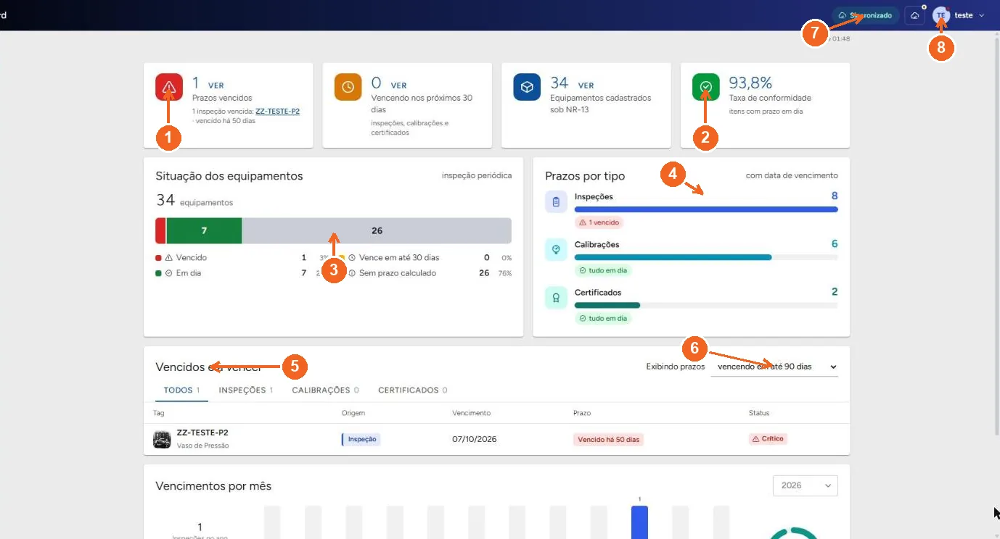
- Prazos vencidos — quantos itens já passaram do prazo, com o mais antigo em destaque. Ver abre a lista. Ao lado: Vencendo nos próximos 30 dias e Equipamentos cadastrados sob NR-13.
- Taxa de conformidade — a porcentagem de itens com prazo em dia.
- Situação dos equipamentos — barra com Vencido, Vence em até 30 dias, Em dia e Sem prazo calculado. Clique numa faixa para ver os equipamentos dela.
- Prazos por tipo — inspeções, calibrações e certificados, cada um com seus vencidos.
- Vencidos e a vencer — a lista de prazos, filtrável por origem (Todos, Inspeções, Calibrações, Certificados). Situação: Crítico (vencido), Atenção (até 30 dias), Operacional ou Sem prazo. Clique na linha para abrir o equipamento.
- Exibindo prazos — janela da lista: vencendo em até 15, 30, 60 ou 90 dias, ou só os vencidos.
- Sincronização — mostra se tudo já subiu para o servidor (veja abaixo).
- Sua conta — o ponto vermelho no avatar avisa que há prazo vencido na empresa.
Mais abaixo, o gráfico Vencimentos por mês mostra quantos prazos vencem em cada mês do ano escolhido.
📌 De onde vem o prazo de inspeção: do último relatório finalizado do equipamento (a menor data entre “Próx. Interna” e “Próx. Externa”). Sem essas datas, o sistema usa a vida remanescente. Relatório em rascunho não gera prazo — veja a regra completa.
📅 Agenda
Os serviços agendados da sua empresa, com faturamento previsto e realizado. Abre na visão Semana (das 6h às 20h); também há Dia e Mês.
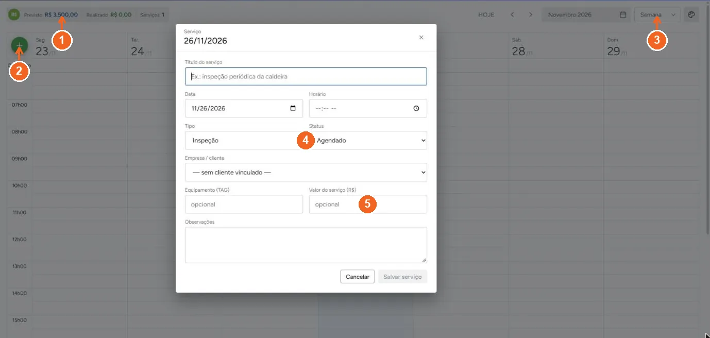
- Faturamento do mês — Previsto (serviços agendados), Realizado (concluídos) e o número de serviços. Cancelados ficam fora das contas; serviço sem valor aparece como “sem valor”, não como zero.
- + Novo serviço — abre o formulário. Clicar num horário vazio da grade também cria um serviço naquele horário.
- Visualização — Semana, Dia ou Mês. As setas e Hoje navegam no calendário.
- Tipo e Status — Inspeção, Manutenção, Visita ou Lembrete; Agendado, Concluído ou Cancelado. O status decide se o valor entra em previsto ou realizado.
- Equipamento (TAG) e Valor — opcionais. O endereço, o responsável e o telefone do serviço vêm do cadastro do cliente escolhido.
Só o Título do serviço é obrigatório. A Agenda é controle da sua empresa: ela não alimenta relatório, prontuário nem prazo de inspeção.
🛢️ Equipamentos
O cadastro de todos os equipamentos sob NR-13. Os mais novos aparecem primeiro, e a lista carrega mais conforme você rola.
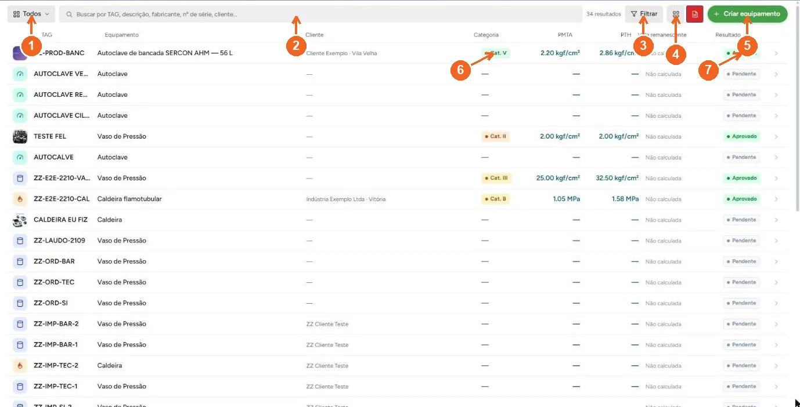
- Tipo — Todos, Vasos, Caldeiras ou Autoclaves, com a contagem de cada.
- Busca — por TAG, descrição, fabricante, nº de série ou cliente.
- Filtrar — tipo, categoria (I a V), cliente e fabricante.
- Grade ou lista — cartões com foto ou tabela. A escolha fica lembrada no aparelho.
- Criar equipamento — abre o cadastro (abaixo).
- Categoria, PMTA e PTH — PMTA e PTH são as adotadas na ficha (seção Pressões da Documentação), na unidade do equipamento.
- Resultado — o resultado do memorial de cálculo: Aprovado, Reprovado ou Pendente (sem memorial ou com campo faltando). A barra de vida remanescente aparece quando ela foi calculada.
Criar um equipamento
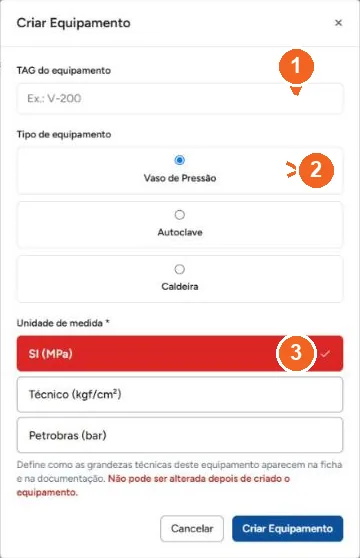
- TAG do equipamento — a identificação única (ex.: V-200). O sistema grava em maiúsculas e não aceita TAG repetida.
- Tipo — Vaso de Pressão, Autoclave (cilíndrica, retangular, vertical de tampo removível ou de bancada) ou Caldeira (flamotubular, ASME Seção I).
- Unidade de medida — SI (MPa), Técnico (kgf/cm²) ou Petrobras (bar). Define como as pressões aparecem na ficha e nos documentos. Não pode ser alterada depois.
Ao criar, a ficha do equipamento abre direto.
🗂️ Ficha do equipamento
Tudo o que se sabe do equipamento, em seções empilhadas na mesma página. É dela que saem os dados da placa, da caracterização e do prontuário nos documentos.
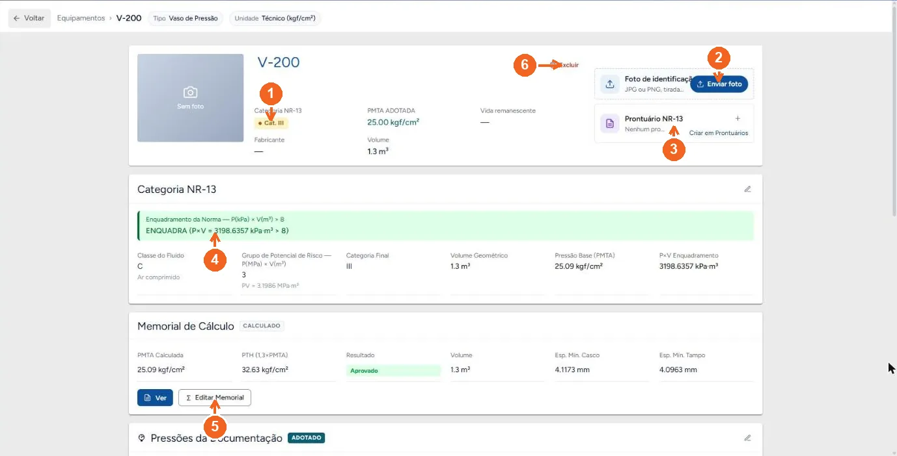
- Resumo — Categoria NR-13, PMTA adotada, vida remanescente, fabricante e volume.
- Foto de identificação — uma foto do equipamento (JPG ou PNG, tirada na hora ou da galeria). Ela vai para a capa do relatório. As fotos técnicas ficam nos ensaios da inspeção, não aqui.
- Prontuário NR-13 — atalho para o prontuário deste equipamento: anexar um PDF existente ou criar em Prontuários.
- Categoria NR-13 — enquadramento, classe do fluido, grupo de potencial de risco e categoria final (como é calculada). O lápis edita.
- Memorial de Cálculo — PMTA calculada, PTH, resultado e espessuras mínimas. Ver mostra as expressões; Editar Memorial abre a calculadora.
- Excluir — o sistema avisa que apaga a ficha, o memorial, as inspeções, os relatórios e os prontuários do equipamento, e que não é possível desfazer. O livro de registro de segurança permanece arquivado.
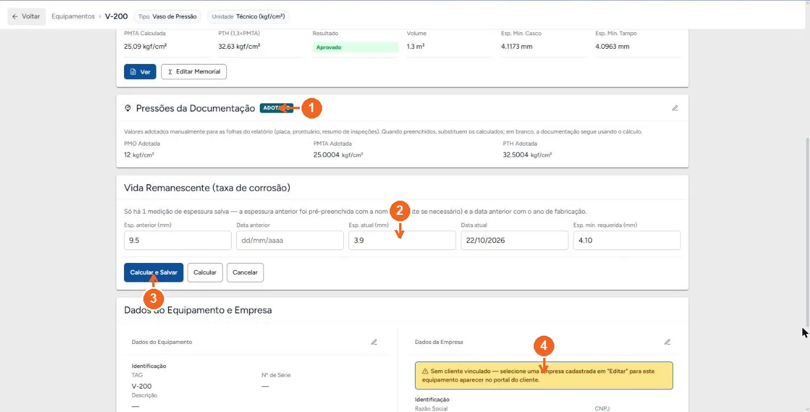
- Pressões da Documentação (Adotado) — PMO, PMTA e PTH que você adota para as folhas do relatório (placa, prontuário, resumo de inspeções). Preenchidas, valem no lugar das calculadas; em branco, a documentação usa o cálculo. Usar calculadas copia os valores do memorial.
- Vida Remanescente — espessura anterior e atual, datas e espessura mínima requerida. O sistema já traz as duas medições mais recentes das inspeções (veja o cálculo).
- Calcular e Salvar — grava a vida remanescente e a próxima inspeção sugerida.
- Dados da Empresa — o cliente dono do equipamento. Escolha em Selecionar empresa cadastrada; sem esse vínculo, o equipamento não aparece no Portal do Cliente.
A seção Dados do Equipamento guarda nº de série, descrição, localização, fabricante, ano, código de projeto, edição, adenda e tipo de construção. A caixa Ocultar datas de inspeção/validade na placa controla a folha da placa de identificação.
🔧 Manômetros e válvulas de segurança de vasos e autoclaves não ficam na ficha: eles são cadastrados como acessórios em Calibrações, onde têm validade, certificado e histórico.
🏷️ Categoria NR-13 (vasos e autoclaves)
No cartão Categoria NR-13 você informa o volume (m³), a pressão (já vem preenchida com a PMTA do memorial) e o fluido de operação, e clica em Calcular Categoria. O sistema faz três contas:
Enquadramento: P (kPa) × V (m³) > 8 — ou fluido classe A, em qualquer P×V
Grupo de potencial de risco: P (MPa) × V (m³) → G1 ≥ 100 · G2 ≥ 30 · G3 ≥ 2,5 · G4 ≥ 1 · G5 < 1
Role para o lado para ver a tabela inteira
| Classe do fluido | Grupo 1 | Grupo 2 | Grupo 3 | Grupo 4 | Grupo 5 |
|---|---|---|---|---|---|
| A — inflamável ou combustível a 200 °C ou mais, tóxico até 20 ppm, hidrogênio, acetileno | I | I | II | III | III |
| B — combustível abaixo de 200 °C, tóxico acima de 20 ppm | I | II | III | IV | IV |
| C — vapor de água, gases asfixiantes simples, ar comprimido | I | II | III | IV | V |
| D — outro fluido | II | III | IV | V | V |
Se o equipamento não enquadra (P×V até 8 e fluido que não é classe A), a categoria sai como N/A (Não Enquadra), com a explicação do item 13.2.1 da norma. Quando o memorial é salvo de novo, a categoria já calculada é refeita com a nova PMTA.
Σ Memorial de cálculo
Na ficha, Calcular Memorial (ou Editar Memorial) abre a calculadora. Ela calcula a espessura mínima requerida e a PMTA de cada parte do equipamento pelo código ASME.
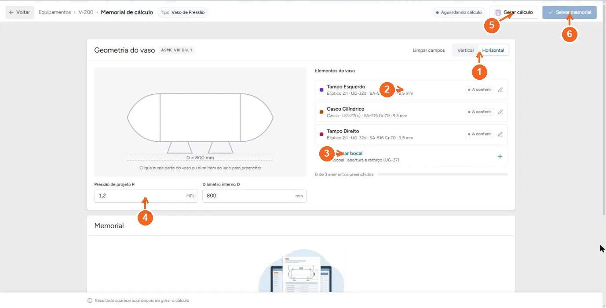
- Vertical ou Horizontal — a orientação do vaso. Ela muda o nome dos tampos (inferior e superior, ou esquerdo e direito).
- Elementos do vaso — tampo, casco cilíndrico e tampo. Clique no item (ou na parte do desenho) para informar tipo, material, tensão admissível S, eficiência de junta E, espessura comercial, sobreespessura de corrosão e temperatura. Cada um mostra “A conferir” até ser preenchido.
- Adicionar bocal — opcional: verificação de abertura e reforço (UG-37).
- Pressão de projeto e diâmetro interno — os dados gerais do cálculo.
- Gerar cálculo — calcula e mostra o memorial abaixo, com o resultado de cada parte.
- Salvar memorial — grava. O sistema avisa se você tentar sair sem salvar.
Role para o lado para ver a tabela inteira
| Equipamento | Código e partes | PMTA e teste |
|---|---|---|
| Vaso de pressão | ASME VIII Div. 1 — casco (UG-27), tampos elíptico, torisférico, hemisférico, cônico (UG-32) e plano soldado ou aparafusado (UG-34), bocais (UG-37) | PMTA = a menor entre as partes · PTH = 1,3 × PMTA |
| Autoclave | Por subtipo: cilíndrica, retangular (placas estaiadas), vertical e de bancada; pode incluir o gerador de vapor | Conforme o subtipo |
| Caldeira | ASME Seção I — costado (PG-27.2.2), tubos (PG-27.2.1) e espelhos (PG-46.1) | PMTA = pressão de projeto · TH = 1,5 × PMTA |
Cada parte é aprovada quando a espessura útil (comercial menos corrosão) é maior ou igual à requerida e a PMTA dela é maior ou igual à pressão de projeto. O resultado geral só é Aprovado se todas forem. O memorial não tem emissão própria: ele entra no relatório (folhas Resumo do Memorial e Memorial de Cálculo) e no prontuário.
🔥 Caldeiras
A ficha da caldeira tem seções próprias. A principal é a Classificação NR-13 da caldeira, feita em três passos.
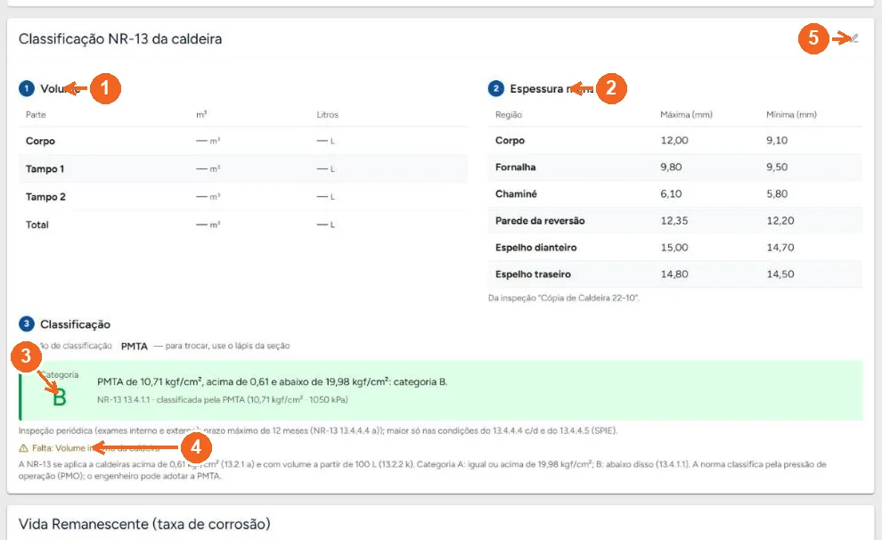
- Volume — corpo, tampos, menos os tubos de gases e a fornalha. Se você tem o volume da placa ou do manual, informe em Total: ele vale no lugar da soma.
- Espessura mensurada — máxima e mínima de cada região, vindas das medições de espessura das inspeções.
- Categoria — A com pressão de 1.960 kPa (19,98 kgf/cm²) ou mais; B abaixo disso. Fora da NR-13 se a pressão for até 60 kPa ou o volume for menor que 100 L.
- Falta — o que ainda impede a classificação completa.
- Lápis — escolhe a pressão usada para classificar: a PMO (padrão da norma) ou a PMTA.
Também na ficha da caldeira: dados de placa (modelo, capacidade de vapor, área de aquecimento), e os blocos recolhíveis Construção, Operação e Instrumentos de segurança e acessórios, que alimentam as folhas próprias da caldeira no relatório. Com 25 anos ou mais de fabricação, o sistema lembra da avaliação de integridade ampliada (13.4.4.6).
⏳ Vida remanescente e prazos
O cartão Vida Remanescente (taxa de corrosão) da ficha compara duas medições de espessura:
Taxa de corrosão = (esp. anterior − esp. atual) ÷ anos entre as medições
Vida remanescente = (esp. atual − esp. mínima requerida) ÷ taxa
Próxima inspeção = o menor entre metade da vida e o teto da categoria
Role para o lado para ver a tabela inteira
| Categoria | I | II | III | IV | V | Caldeira |
|---|---|---|---|---|---|---|
| Teto da próxima inspeção | 3 anos | 4 anos | 6 anos | 8 anos | 10 anos | 12 meses |
Se a espessura atual já está abaixo da mínima, a vida é zero e o sistema indica reprovar ou reparar. Com só uma medição salva, a espessura anterior vem da nominal e a data, do ano de fabricação — confira antes de salvar.
📅 Qual data vale no Dashboard: primeiro, as datas de Próx. Interna e Próx. Externa que você informa nas Configurações do relatório — vale a menor, do último relatório finalizado. Só sem essas datas o sistema usa a próxima inspeção da vida remanescente. Para caldeira, as Configurações têm o botão Sugerir, que propõe 12 meses após a execução (prazo da NR-13 13.4.4.4 a); prazos maiores dependem de condições da norma e são decididos pelo engenheiro.
📋 Inspeções e containers
A tela de Inspeções lista os equipamentos com a quantidade de inspeções de cada um — os mais inspecionados no topo. É a tela que o inspetor usa em campo, pelo celular.
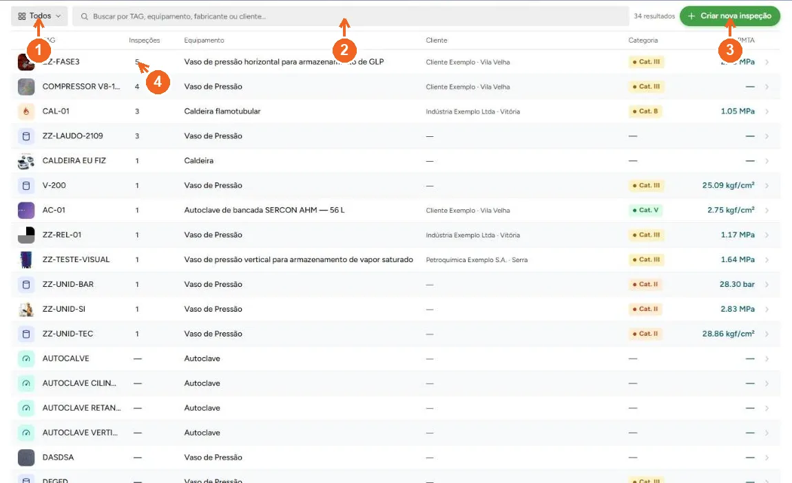
- Tipo — Todos, Vasos, Caldeiras ou Autoclaves.
- Busca — por TAG, equipamento, fabricante ou cliente.
- Criar nova inspeção — escolha o equipamento e o sistema já abre a criação do container.
- Inspeções — quantas rodadas o equipamento já tem. Clique na linha para ver os containers dele.
Um container de inspeção é uma rodada de inspeção do equipamento: ele agrupa os ensaios que serão feitos em campo e guarda o que foi preenchido em cada um. As rodadas anteriores continuam inteiras.
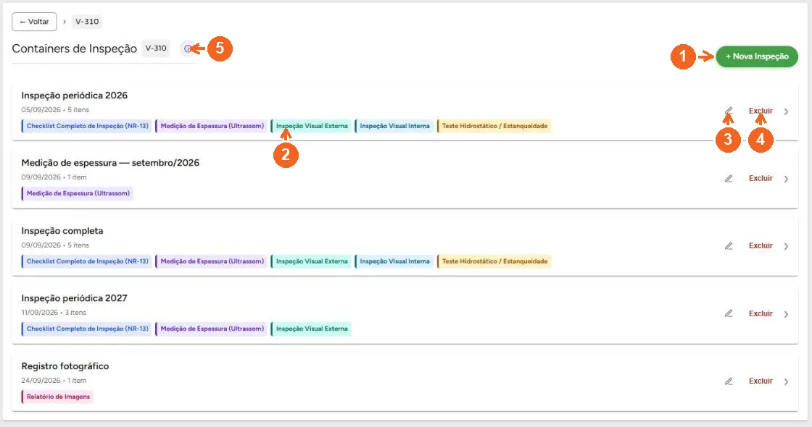
- + Nova Inspeção — cria um container novo.
- Ensaios do container — as etiquetas coloridas mostram os ensaios atribuídos. Clique no cartão para abrir.
- Renomear — muda só o nome; os ensaios e o vínculo com relatórios continuam.
- Excluir — pede confirmação no próprio cartão.
- (i) — explica como os containers funcionam.
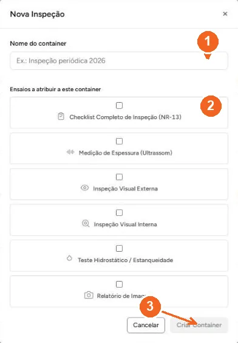
- Nome do container — ex.: “Inspeção periódica 2026”. Em branco, vira “Inspeção de dd/mm/aaaa”.
- Ensaios a atribuir — marque os que serão feitos. Vasos e autoclaves: Checklist Completo de Inspeção (NR-13), Medição de Espessura (Ultrassom), Inspeção Visual Externa, Inspeção Visual Interna, Teste Hidrostático / Estanqueidade e Relatório de Imagens. Caldeiras têm também Ensaio de Acumulação, Verificação NR-13 da Caldeira e Alimentação de Água e Controle de Nível.
- Criar Container — só libera com pelo menos um ensaio marcado.
⚠️ Escolha bem os ensaios ao criar: não dá para acrescentar ensaio a um container já criado. Se faltou algum, crie outro container para aquele ensaio.
📦 Dentro do container
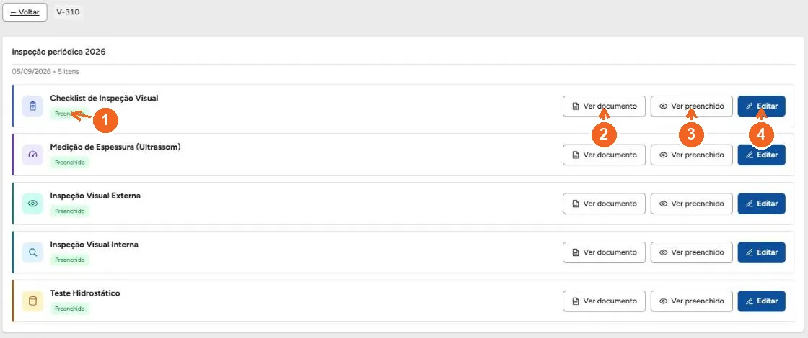
- Pendente ou Preenchido — a situação de cada ensaio. Marcar o ensaio na criação só o atribui: ele entra no relatório depois de preenchido e salvo.
- Ver documento — mostra como o ensaio sai no relatório, em uma prévia avulsa (que não é arquivada).
- Ver preenchido — resumo do que foi respondido, sem abrir o formulário.
- Preencher / Editar — abre o formulário do ensaio.
Em todos os formulários:
- Salvamento automático cerca de 1 segundo depois de cada alteração e ao voltar. O botão de salvar no rodapé confirma com “Salvo”.
- Campos preenchidos do cadastro — TAG, cliente, endereço, fabricante, pressões e dados do instrumento vêm da ficha, do memorial e dos certificados. Você pode corrigir no ensaio sem mexer no cadastro.
- Resultado do Ensaio — nos exames visuais, ultrassom, teste hidrostático e ensaios de caldeira há os botões APROVADO / REPROVADO. O resultado vai para o “Resumo do que foi inspecionado” do relatório.
☑️ Checklist NR-13
Dentro do container ele aparece como Checklist de Inspeção Visual. É a verificação da documentação e das condições gerais do equipamento, em seções que abrem e fecham.
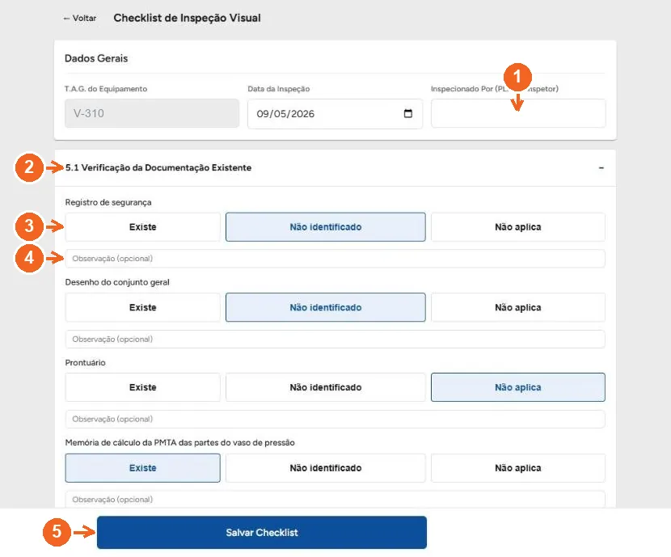
- Inspecionado por — o PLH ou inspetor que fez a inspeção. A data vem com o dia de hoje.
- Seções — 5.1 Verificação da Documentação Existente, 5.2 Resultados da Inspeção, Exame do Prontuário e Registro de Segurança, Exame Externo, Exame Interno, Ensaio Hidrostático, Instrumentos de Controle Instalados e Observações.
- Respostas — na documentação: Existe, Não identificado ou Não aplica; nas demais: Sim, Não ou N/A.
- Observação — opcional, em cada pergunta.
- Salvar Checklist — confirma o salvamento.
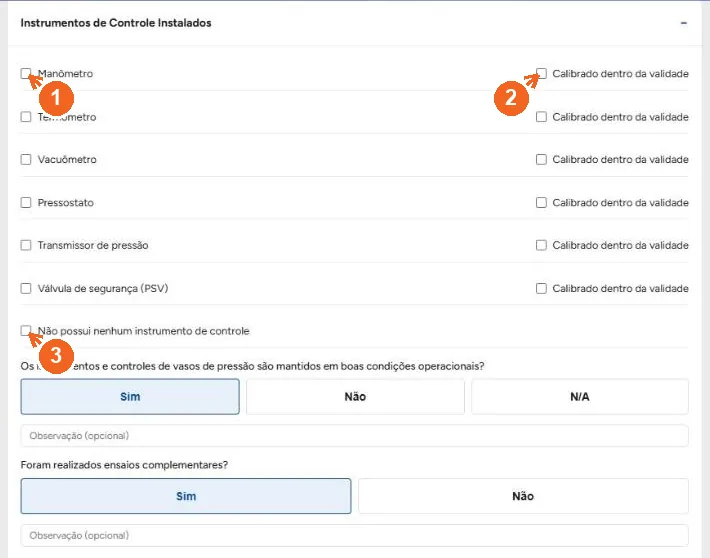
- Instrumento instalado — manômetro, termômetro, vacuômetro, pressostato, transmissor de pressão e válvula de segurança (PSV). Ao marcar, aparece Vincular calibração, que busca a calibração cadastrada em Calibrações.
- Calibrado dentro da validade — com calibração vinculada, o sistema decide sozinho: dentro da validade, vencida na data da inspeção ou reprovada.
- Não possui nenhum instrumento de controle — quando o equipamento não tem nenhum.
O checklist tem duas áreas de fotos: Registro Fotográfico da Documentação e Registro Fotográfico do Checklist. No relatório, ele vira as folhas Verificação da documentação, Checklist e as duas folhas de fotos.
📷 Fotos e descrições
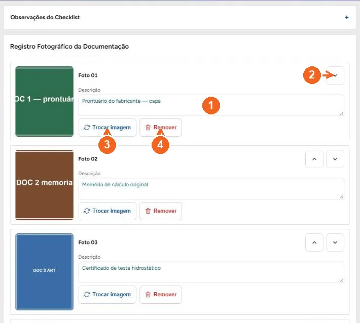
- Descrição — o texto que sai embaixo da foto no relatório. Cada foto tem a sua, e ela acompanha a foto se a ordem mudar.
- Setas — mudam a ordem das fotos (Foto 01, Foto 02…).
- Trocar imagem — no celular pergunta Galeria ou Câmera, e mantém a descrição.
- Remover — tira a foto deste rascunho, com confirmação.
+ Adicionar foto aceita várias de uma vez e, no celular, oferece a câmera. Enquanto as fotos são processadas o botão de salvar espera por elas. A foto é comprimida, guardada primeiro no aparelho e enviada ao servidor em seguida — sem sinal, ela sobe depois. No relatório, cabem 4 fotos por folha; com mais fotos, o sistema cria folhas extras.
👁️ Exame visual externo e interno
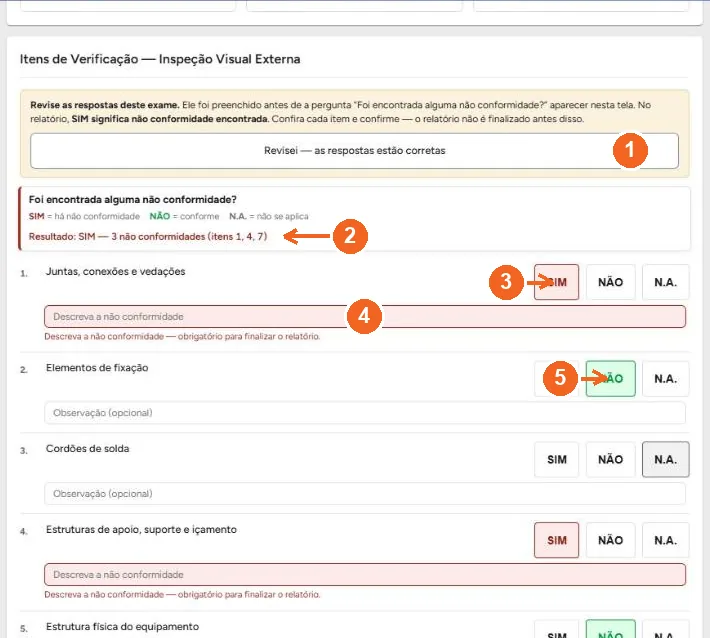
- Revise as respostas — só aparece em exames preenchidos antes da pergunta atual existir. Confira e clique em Revisei; sem isso, o relatório não finaliza.
- Resultado — resumo ao vivo: quantas não conformidades e em quais itens.
- SIM = há não conformidade (vermelho). Atenção: aqui SIM é o lado ruim.
- Descreva a não conformidade — obrigatório para cada SIM. Não trava o campo, mas impede finalizar o relatório.
- NÃO = conforme (verde). N.A. = não se aplica.
São 15 itens no externo (juntas, fixação, soldas, suportes, drenagem, alívio de pressão, indicadores de pressão, placa, acessibilidade, ventilação…) e 15 no interno (paredes, trincas, incrustações, erosão, soldas internas, corrosão sob tensão, pite, bocas de inspeção…). A caldeira tem a sua própria lista. Depois dos itens: Observações Gerais, Conclusão Técnica, resultado e fotos.
📝 As não conformidades dos exames saem descritas no relatório, mas as recomendações não são criadas sozinhas: escreva-as na folha de conclusão, na tabela Recomendações de Segurança (dá para guardar textos que se repetem em Predefinições).
📏 Medição de espessura (ultrassom)
Os dados do componente (espessura nominal, material, ano) vêm da ficha e do memorial; os do ensaio (aparelho, acoplante, cabeçote, velocidade sônica) vêm do certificado do bloco padrão.
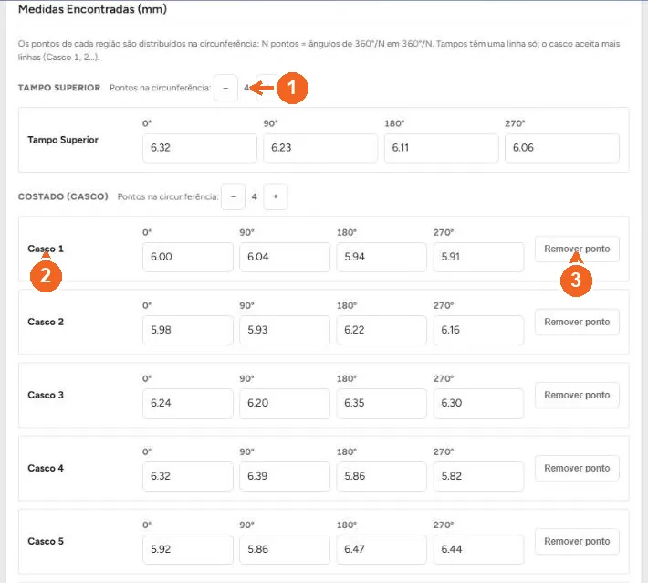
- Pontos na circunferência — de 1 a 12 por região (padrão 4: 0°, 90°, 180° e 270°).
- Regiões — tampo superior, costado (casco) e tampo inferior. O casco aceita várias linhas (Casco 1, 2, 3…); a caldeira tem corpo, fornalha, chaminé, parede da reversão e espelhos.
- + ponto / Remover ponto — acrescenta ou tira linhas do casco.
📐 Como a medição é avaliada: no relatório, cada região é comparada com a espessura mínima requerida do memorial. Leitura abaixo da mínima sai em vermelho. O APROVADO/REPROVADO do ensaio é marcado por você no formulário. As medições também alimentam a vida remanescente e a folha de espessura do prontuário.
💧 Teste hidrostático
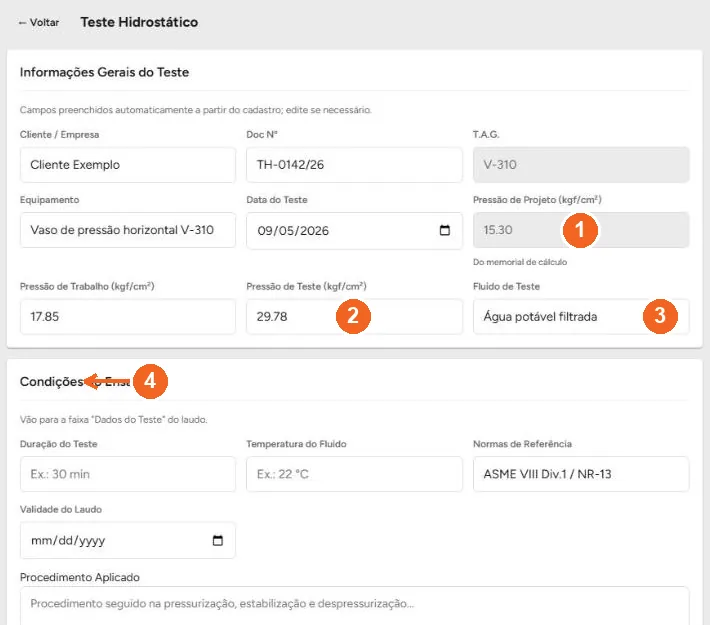
- Pressão de Projeto — vem travada do memorial de cálculo.
- Pressão de Teste — sugerida pela PTH; a de trabalho vem da PMO adotada. Sempre na unidade do equipamento.
- Fluido de Teste — informe o fluido usado no teste (o sistema avisa se ficou o fluido de operação).
- Condições do Ensaio — duração, temperatura, normas de referência (ASME VIII Div. 1 / NR-13 por padrão), validade do laudo e procedimento aplicado.
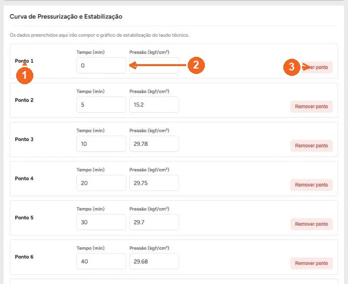
- Pontos da curva — cada ponto é um instante do teste.
- Tempo (min) e Pressão — viram o gráfico de pressurização e estabilização do laudo.
- Remover ponto — e + Adicionar Ponto no fim da lista.
Depois: Parecer Técnico, resultado e fotos — sem limite de fotos, 4 por folha de evidência.
🔥 Ensaios de caldeira e relatório de imagens
Role para o lado para ver a tabela inteira
| Ensaio | O que se preenche | Regras |
|---|---|---|
| Ensaio de Acumulação | Parâmetros, instrumento (vincule a calibração do manômetro), início e término, pressão máxima atingida, suficiência das válvulas, laudo e fotos | Término depois do início; pressão acima da PMTA com APROVADO bloqueia; calibração vencida gera alerta |
| Verificação NR-13 da Caldeira | Itens por grupo (dispositivos obrigatórios, identificação, documentação, instalação, operação, válvulas) com Atende / Não atende / N.A. | “Não atende” exige o que foi encontrado e sai em “Itens da NR-13 não atendidos” |
| Alimentação de Água e Controle de Nível | Bomba principal, alimentação independente, controle automático, alarme de nível baixo, intertravamento e visores | Falha no intertravamento impede APROVADO |
| Relatório de Imagens | Data, observação geral e imagens com título e descrição | Para emitir: ao menos uma imagem e todas descritas |
📄 Relatórios
Todos os relatórios de inspeção de segurança NR-13 da empresa — rascunhos e finalizados.
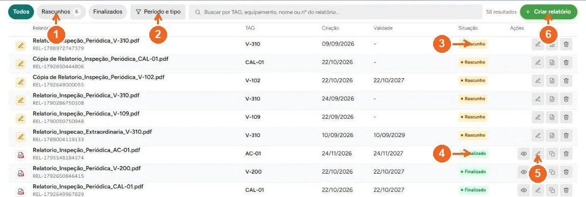
- Todos, Rascunhos, Finalizados — recortes rápidos. A busca acha por TAG, equipamento, nome ou número do relatório.
- Período e tipo — este mês, este ano, últimos 12 meses, tipo de inspeção, situação, cliente e arquivados.
- Rascunho — ações: continuar editando, editar nome e excluir (definitivo).
- Finalizado — o PDF já está arquivado.
- Ações do finalizado — visualizar, editar o nome, duplicar e arquivar.
- Criar relatório — abre o assistente.
➕ Criar relatório
Depois de escolher o equipamento, o assistente Configurar novo relatório tem três etapas: Inspeção → Certificados → Resumo.
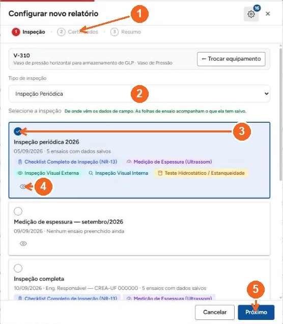
- Etapas — o progresso do assistente.
- Tipo de inspeção — Inicial, Periódica (padrão) ou Extraordinária.
- Selecione a inspeção — o container de onde vêm os dados de campo. Cada um mostra a data, quem inspecionou e quantos ensaios têm dados. Há também Não usar container, para gerar sem dados de campo.
- Olho — mostra o conteúdo do container antes de escolher.
- Próximo — segue para Certificados: os lotes ou calibrações avulsas do equipamento, que entram como folhas no fim do relatório.
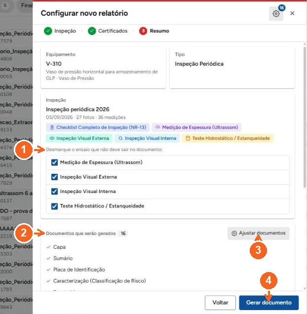
- Desmarque o ensaio que não deve sair no documento.
- Documentos que serão gerados — as folhas: capa, sumário, placa de identificação, caracterização, prontuário, resumo do memorial, memorial de cálculo, inspeções, verificação de documentação, checklist, exames externo e interno, conclusão, laudo de ultrassom, teste hidrostático e relatório de imagens. Folha sem dado na inspeção é avisada (“sai em branco”).
- Ajustar documentos — marca e desmarca folhas; Restaurar padrão volta ao início.
- Gerar documento — cria o relatório em rascunho e abre o editor.
✏️ Revisar o rascunho
O relatório abre como rascunho: a prévia mostra o documento inteiro, mas ainda não gera PDF oficial, nem prazo, nem entra no Portal.
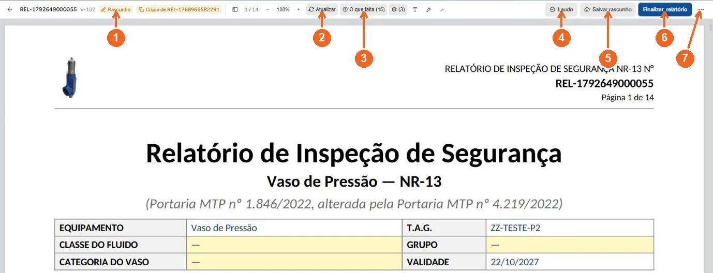
- Rascunho — o selo do documento em edição (e “Cópia de…”, quando é uma duplicação).
- Atualizar — refaz a prévia depois de mudanças.
- O que falta — lista os campos em branco no documento, para você completar.
- Laudo — marca o resultado: SIM — APTO (pode continuar operando) ou NÃO — INAPTO.
- Salvar rascunho.
- Finalizar relatório — veja abaixo.
- ⋯ — Imprimir pré-visualização, Baixar PDF e Configurações.
Também na barra: Predefinições, conjuntos de textos reutilizáveis da empresa (por exemplo, recomendações que se repetem), aplicados com Usar neste relatório. E dá para clicar em qualquer texto do documento e escrever direto nele — a mudança vale só para este relatório, sem alterar o cadastro.
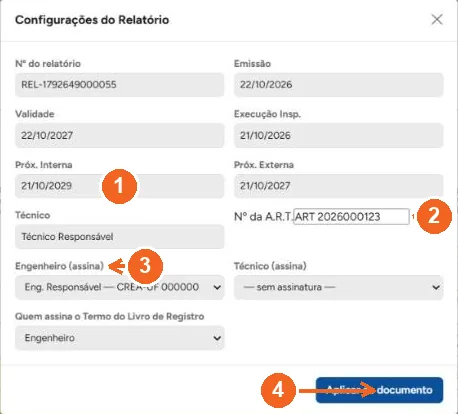
- Datas — Emissão, Validade, Execução Insp., Próx. Interna e Próx. Externa. As próximas são as que alimentam o Dashboard. Na caldeira, o botão Sugerir propõe o prazo da NR-13.
- Nº da A.R.T. — a ART desta inspeção (na caldeira, dá para anexar o PDF dela).
- Engenheiro (assina) e Técnico (assina) — escolhidos entre os cadastrados em Equipe. Também: quem assina o termo do livro de registro.
- Aplicar ao documento — sem clicar aqui, as mudanças não entram no relatório.
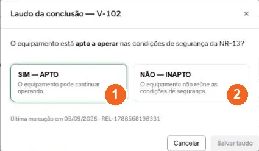
- SIM — APTO — o equipamento pode continuar operando.
- NÃO — INAPTO — não reúne as condições de segurança. O laudo é obrigatório para finalizar.
🔒 Finalizar e código de verificação
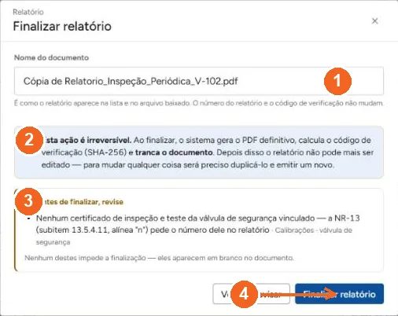
- Nome do documento — como o relatório aparece na lista e no arquivo baixado.
- Esta ação é irreversível — o sistema gera o PDF definitivo, calcula o código de verificação (SHA-256) e tranca o documento.
- Antes de finalizar, revise — avisos que não impedem (saem em branco). Os que impedem aparecem em Falta preencher para poder finalizar.
- Finalizar relatório.
Role para o lado para ver a tabela inteira
| Impede finalizar | Só avisa |
|---|---|
| Número do relatório, data de emissão ou tipo de inspeção em branco | Validade, execução, próximas inspeções interna e externa |
| Engenheiro responsável não selecionado | Técnico não selecionado |
| Laudo APTO / INAPTO não marcado | Dados do teste hidrostático (pressão, data, resultado, fluido) |
| Não conformidade sem descrição nos exames visuais, ou exame antigo não revisado | Observação ou resultado dos exames; aparelho ou resultado do ultrassom |
| Relatório de imagens sem foto ou descrição; itens de caldeira “não atende” sem constatação; acumulação com erro | Certificado da válvula de segurança não vinculado (a NR-13 pede o número dele no relatório) |
O PDF é gerado, recebe o código e é guardado. Se algo falhar no meio, nada é salvo e você tenta de novo. Sem internet, o documento fica no aparelho e sobe quando a conexão voltar.
📁 Relatório emitido
O relatório finalizado abre o arquivo arquivado: o mesmo PDF gerado na emissão, sem ser remontado.
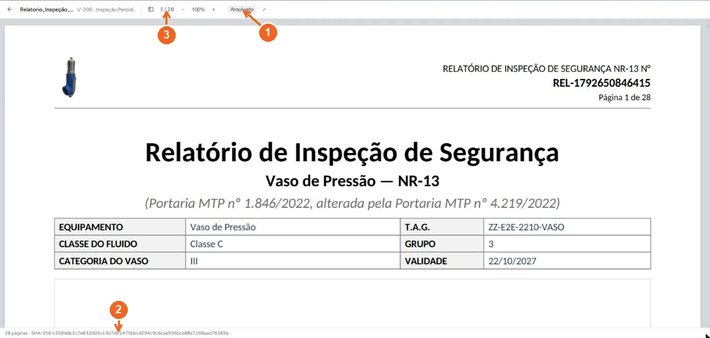
- Arquivado — selo do documento emitido; ao lado, abrir em outra aba, imprimir e baixar o PDF.
- Código de verificação — o SHA-256 do arquivo, com o número de páginas. Qualquer alteração no PDF muda esse código, então ele comprova que o arquivo é o mesmo que foi emitido.
- Páginas — navegação e zoom.
- Corrigir um relatório finalizado: use Duplicar. Nasce um rascunho novo, editável, com os dados de inspeção copiados; emissão, datas, validade e ART começam em branco. O original não muda.
- Editar nome muda só como aparece na lista; o PDF e o código continuam os mesmos.
- Arquivar tira da lista, mas não apaga: o prazo, o Portal e o histórico continuam valendo. Para rever, use o filtro “Arquivados”. Relatório finalizado não se exclui.
📘 Prontuários
O prontuário reúne os dados construtivos do equipamento: projeto, materiais, dimensões, croqui, categorização e memorial. Cada equipamento tem um prontuário vigente, e as versões anteriores ficam no histórico.
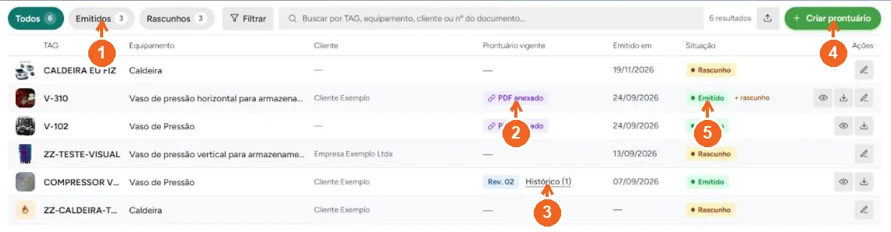
- Todos, Emitidos, Rascunhos — recortes; Filtrar por tipo, cliente e categoria.
- PDF anexado — prontuário existente enviado em PDF, que entra como está.
- Rev. 02 · Histórico — a revisão vigente e as anteriores, guardadas só para consulta.
- Criar prontuário — escolha o equipamento; o formulário abre com os dados da ficha. O botão ao lado anexa um prontuário existente (só PDF, até 8 MB).
- Emitido — “+ rascunho” indica uma nova revisão em andamento.
Há dois caminhos:
Ou: Anexar prontuário existente — o PDF do fabricante ou de uma reconstituição anterior vira o prontuário vigente, sem passar pelo formulário.
O formulário tem as seções Empresa proprietária, Identificação do vaso de pressão, Dados do projeto, Especificações dos materiais, Dimensões e croqui 2D, Medição de espessura (escolha o container de onde vem a espessura), Revisão e Responsabilidade técnica. Campos com selo de automático vêm do memorial, da ficha ou do cliente e podem ser alterados. O PDF emitido tem as folhas Identificação, Dados técnicos e categorização, Medição de espessura, Croqui 2D cotado e Resumo do memorial.
📐 Croqui 2D: para vasos de pressão, o botão Croqui 2D do Equipamento abre um editor que desenha o vaso a partir do memorial (diâmetro, espessuras, tampos, material) e você completa com comprimento, virolas, bocais e suportes. O croqui e a folha de dados vão para o prontuário.
Emitir de novo não sobrescreve: cada emissão cria uma revisão nova, e a anterior continua no histórico.
📒 Registros de Segurança
O livro de registro de segurança de cada equipamento (NR-13, 13.4.1.8 para caldeiras e 13.5.1.7 para vasos): inspeções, manutenções, reparos e demais ocorrências, em ordem cronológica. A lista mostra os equipamentos que já têm registros; abra um para ver a linha do tempo.
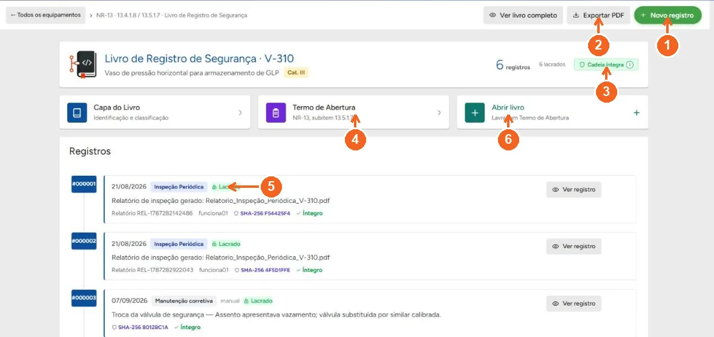
- Novo registro — lança uma ocorrência.
- Exportar PDF — o livro completo, com capa e termo de abertura. Ver livro completo mostra na tela.
- Cadeia íntegra — cada registro trancado tem um lacre (SHA-256) ligado ao anterior. Se algo fosse alterado, o selo mudaria para “Cadeia não confere”.
- Capa do Livro e Termo de Abertura — identificação e classificação do equipamento e o termo exigido pela norma.
- Registro lacrado — número sequencial, data, tipo, texto, lacre e “Íntegro”.
- Abrir livro — lavra um termo de abertura (primeiro livro, livro anterior perdido ou encerrado).
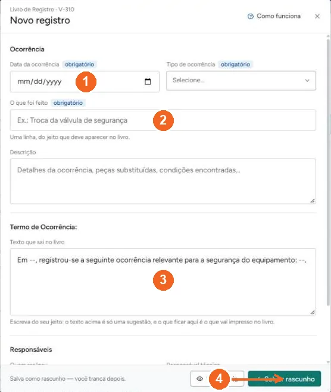
- Data e Tipo de ocorrência — obrigatórios. Tipos: manutenção corretiva ou preventiva, reparo, substituição de dispositivo, ajuste/calibração, outra ocorrência e abertura de livro.
- O que foi feito — obrigatório, uma linha do jeito que deve aparecer no livro.
- Texto que sai no livro — o sistema sugere um texto; você pode reescrever.
- Salvar rascunho — o registro nasce como rascunho; abaixo, “Quem realizou” e o responsável técnico que assina.
✍️ Os registros são lançados por você. Finalizar um relatório não cria um registro sozinho: depois da inspeção, lance o registro dela no livro do equipamento. Registro trancado não se edita nem se apaga.
🎚️ Calibrações
Os acessórios de cada equipamento — manômetros, válvulas de segurança (PSV), termômetros, vacuômetros, pressostatos, malhas de pressão (transmissores) e termostatos — e as calibrações deles. A lista mostra cada equipamento com o próximo vencimento; os recortes separam Em dia, A vencer e Vencidas.
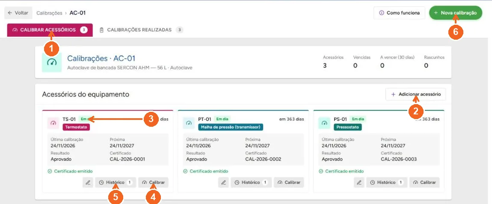
- Calibrar acessórios / Calibrações realizadas — os acessórios do equipamento e o histórico de certificados.
- Adicionar acessório — nome (ex.: PSV-01), fabricante, modelo, nº de série, faixa, set point, local e foto. Cadastra uma vez só.
- Situação — Em dia, A vencer (30 dias), Vencido, Reprovado ou Rascunho em aberto, com a última e a próxima calibração.
- Calibrar — abre o formulário de calibração do acessório.
- Histórico — as calibrações anteriores.
- Nova calibração — escolhe o equipamento e o acessório.
No formulário: número do certificado (sugerido), data da calibração e próxima calibração (sugerida 12 meses depois), lote ou calibração avulsa, padrão utilizado (vem de Certificados, com aviso se estiver vencido), condições ambientais, resultados (valor do padrão, leituras subindo e descendo, incerteza e fator k) e conclusão (aprovado ou reprovado, responsável e texto). Emitir certificado gera o PDF definitivo; corrigir depois exige uma revisão.
Calibração feita por laboratório? Use Registrar certificado de laboratório externo: laboratório, nº do certificado, data, validade e o PDF do laboratório (sem o PDF, o relatório cita o certificado mas não o anexa).
🔗 A calibração aparece em três lugares: no checklist (Vincular calibração, no quadro de instrumentos), no assistente do relatório (etapa Certificados, folhas no fim do documento) e no Dashboard (validade de cada acessório).
🏅 Certificados dos padrões
Os instrumentos de referência da sua empresa — os padrões usados para medir e calibrar. Um certificado por padrão, valendo para todos os equipamentos.
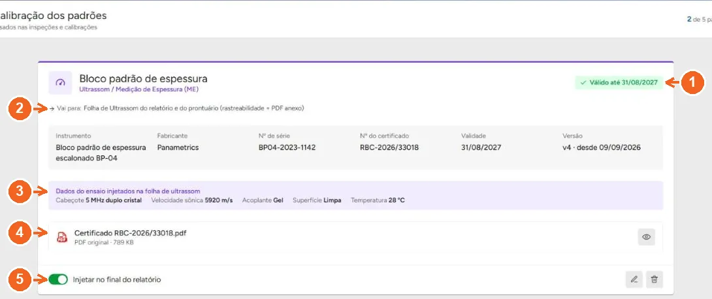
- Validade — “Válido até”, “Vence em N dias” (alerta a partir de 30 dias) ou “Vencido há N dias”. Também entra no Dashboard.
- Vai para — onde o certificado é usado. O bloco padrão vai para a folha de ultrassom do relatório e do prontuário; o manômetro padrão, para os certificados de manômetro e o teste hidrostático.
- Dados do ensaio — só no bloco padrão: cabeçote, velocidade sônica, acoplante, superfície e temperatura, que preenchem o formulário de ultrassom.
- PDF do certificado — obrigatório, até 2 MB.
- Injetar no final do relatório — ligado, o PDF do certificado é anexado ao fim do relatório.
Os padrões são: bloco padrão de espessura (ultrassom), manômetro padrão, válvula PSV padrão, pressostato padrão e termômetro padrão. O certificado só entra no relatório se o relatório tiver a folha do ensaio correspondente e a opção de injetar estiver ligada. Editar ou excluir cria uma versão nova: relatórios já salvos mantêm a versão que usaram.
🧭 Calibrações × Certificados: Calibrações são os instrumentos instalados no equipamento do cliente; Certificados são os padrões da sua empresa, usados para inspecionar e calibrar.
🏢 Meus dados
Os dados da sua empresa (a executante), que saem no cabeçalho de relatórios, prontuários e certificados. Só a conta principal edita.
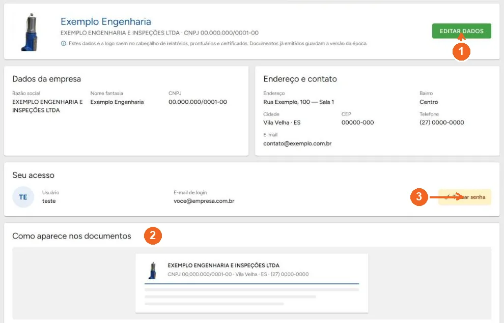
- Editar dados — logo, razão social, nome fantasia, CNPJ, telefone, e-mail e endereço.
- Como aparece nos documentos — prévia do cabeçalho.
- Trocar senha — por código enviado ao e-mail ou com a senha atual.
Documentos já emitidos guardam os dados da época: trocar a logo não altera relatório finalizado. Mais abaixo fica o Modelo do relatório, que vale para os próximos relatórios.
👷 Equipe (quem assina)
Os profissionais que assinam os documentos: engenheiros (PLH) e inspetores. Ter alguém aqui não cria login — logins são em Acessos.
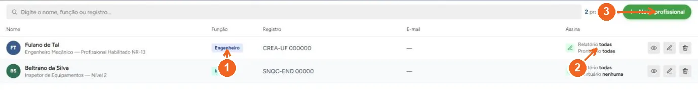
- Tipo — Engenheiro (assina o laudo) ou Inspetor (executa o ensaio), com a função exibida na assinatura.
- Assina — quantas folhas do relatório e do prontuário a pessoa assina. O ícone indica se a imagem da assinatura está cadastrada.
- Novo profissional — nome, CREA / registro, e-mail, tipo, função e informações adicionais (ex.: certificação SNQC).
Assinatura: envie a imagem da rubrica; o sistema remove o fundo e deixa só o traço. Folhas que este funcionário assina: marque, no relatório e no prontuário, em quais folhas o carimbo dele aparece (engenheiro: todas, por padrão; inspetor: nenhuma). Quem assina cada relatório é escolhido nas Configurações do relatório, e os dados são congelados no documento: mudar o cadastro depois não altera relatórios já feitos.
🤝 Clientes
As empresas donas dos equipamentos. O cliente vira o contratante nos documentos e é quem pode ter acesso ao Portal.
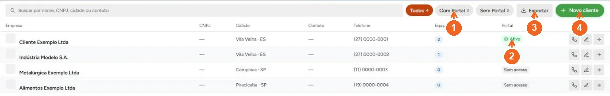
- Todos, Com Portal, Sem Portal — recortes por acesso ao portal.
- Portal — Ativo quando o cliente tem login.
- Exportar — a lista em CSV.
- Novo cliente — razão social (obrigatória), fantasia, CNPJ, atividade, contato, telefone, e-mail, endereço e anotações. A busca Buscar empresa no Google preenche os dados a partir do nome e da cidade.
Ao abrir um cliente: abas Dados, Equipamentos (com a situação de cada um), Portal e Localização (mapa). Excluir um cliente o tira da lista, mas não altera equipamentos nem documentos emitidos. O vínculo do equipamento com o cliente é feito na ficha do equipamento, em Dados da Empresa.
🌐 Portal do Cliente
Uma área só de consulta para o seu cliente acompanhar os equipamentos e os documentos dele.
- Em Clientes, abra o cliente e vá na aba Portal.
- Clique em Criar acesso, informe o e-mail e uma senha (mínimo 6 caracteres) e confirme em Criar acesso do cliente. O acesso é criado na hora.
- Confira se os equipamentos do cliente estão vinculados a ele na ficha (Dados da Empresa).
O cliente entra com esse login e vê Seus equipamentos (foto, TAG, categoria, PMTA e situação) e, em cada um, as abas Documentação (relatórios finalizados, para visualizar, imprimir e baixar), Prontuário, Registros (capa, termo de abertura e livro), Histórico, Acessórios (com a próxima calibração) e Calibrações. Rascunhos nunca aparecem no portal.
🔑 Acessos
Os logins da sua equipe e o que cada um pode usar. Só a conta principal vê esta tela.
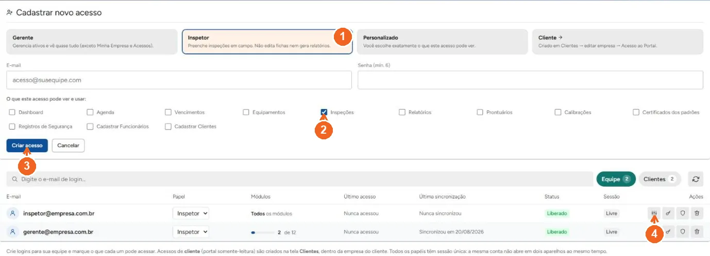
- Perfil — Gerente, Inspetor, Personalizado ou Cliente (este é criado em Clientes).
- O que este acesso pode ver e usar — os módulos: Dashboard, Agenda, Vencimentos, Equipamentos, Inspeções, Relatórios, Prontuários, Calibrações, Certificados dos padrões, Registros de Segurança, Cadastrar Funcionários e Cadastrar Clientes.
- Criar acesso — com e-mail e senha (mínimo 6 caracteres).
- Ações — permissões, resetar senha, bloquear/liberar e excluir.
A tabela mostra o último acesso, a última sincronização, se o login está liberado e se a sessão está em uso. Mudanças de permissão valem no próximo login da pessoa.
📶 Celular e sem internet
O sistema roda no navegador do celular, do tablet e do computador, e pode ser instalado como aplicativo (veja abaixo). O que você salva vai primeiro para o aparelho e sobe para o servidor numa fila, sozinho.
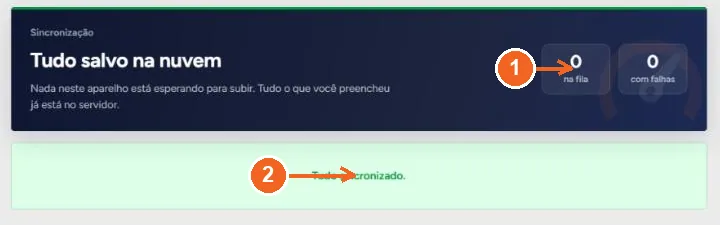
- Na fila / com falhas — o que ainda não chegou ao servidor. As pendências não se perdem ao fechar o aplicativo.
- Tudo sincronizado — nada esperando para subir.
- O selo no topo da tela mostra Sincronizado, Sincronizar (N) ou Offline — salvo no aparelho. Tocar nele abre esta tela.
- Antes de ir a campo sem sinal, abra o equipamento com internet: assim os dados dele ficam no aparelho.
- Se o mesmo dado foi alterado em dois aparelhos, a tela pede a sua decisão: Manter a minha ou Usar a do servidor. Nada se perde enquanto você não escolhe.
- Se aparecer “Espaço do aparelho ficando baixo”, sincronize assim que tiver conexão.
👤 Sua conta e o aplicativo
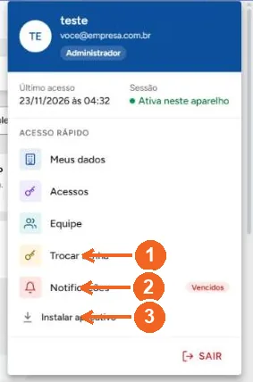
- Trocar senha — por código no e-mail ou com a senha atual. Na tela de login, “Esqueci / trocar senha” faz o mesmo.
- Notificações — mostra “Vencidos” quando há prazo vencido e leva ao Dashboard.
- Instalar aplicativo — instala o sistema na tela inicial do celular ou no computador. Sem o botão do navegador: no Android, menu ⋮ → Adicionar à tela inicial; no iPhone (Safari), Compartilhar → Adicionar à Tela de Início.
O login é com e-mail e senha ou com Entrar com Google, para contas que já têm acesso liberado.
ℹ️ Central de ajuda
O item Info, no fim do menu, é a ajuda dentro do sistema, disponível para todos os logins.
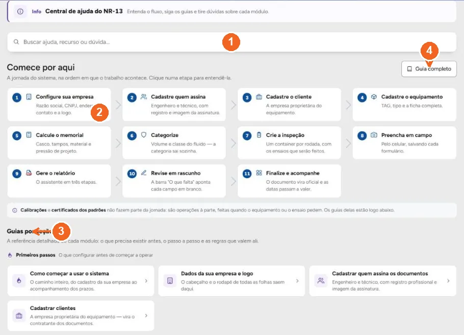
- Busca — acha guias e dúvidas por palavra.
- Comece por aqui — a jornada em 11 etapas, na ordem do trabalho. Clique numa etapa para ver o que fazer nela.
- Guias por seção — passo a passo de cada módulo.
- Guia completo — a jornada inteira de uma vez.
📆 Rotina sugerida
Role para o lado para ver a tabela inteira
| Quando | O que fazer |
|---|---|
| Uma vez | Meus dados e logo, Equipe com assinaturas, certificados dos padrões, logins em Acessos |
| Equipamento novo | Cliente → equipamento → memorial → categoria → acessórios em Calibrações → prontuário |
| Antes da visita | Agende na Agenda; abra os equipamentos com internet no celular; crie o container com os ensaios certos |
| Em campo | Preencha os ensaios e as fotos com descrição; calibre os acessórios do lote |
| No escritório | Criar relatório → revisar “O que falta” → Configurações (datas, ART, assinantes) → Laudo → Finalizar; lançar o registro no livro |
| Toda semana | Dashboard: vencidos e a vencer em 30, 60 e 90 dias; validade dos padrões |
❓ Perguntas frequentes
Preciso cadastrar o equipamento antes de criar uma inspeção?
Sim. A inspeção é sempre de um equipamento: crie a TAG em Equipamentos e depois o container em Inspeções. Com o memorial e a categoria feitos antes, os formulários já chegam com pressões, espessura nominal e material preenchidos.
Posso fazer a inspeção pelo celular sem internet?
Sim. Os ensaios e as fotos ficam salvos no aparelho e sobem sozinhos quando a conexão volta. A condição é ter aberto o equipamento com internet antes, para que os dados dele estejam no aparelho.
Posso editar um relatório depois de finalizado?
Não. O relatório finalizado é um PDF trancado, com código de verificação. Para corrigir, use Duplicar: nasce um rascunho novo com os dados copiados, que você revisa e finaliza. O original continua como estava.
Por que um equipamento aparece como “sem prazo” no Dashboard?
Porque ainda não há relatório finalizado com Próx. Interna ou Próx. Externa preenchidas nas Configurações, nem vida remanescente calculada na ficha. Relatório em rascunho não gera prazo.
Qual a diferença entre Calibrações e Certificados?
Calibrações são os instrumentos instalados em cada equipamento do cliente, como manômetros e válvulas de segurança. Certificados são os instrumentos padrão da sua empresa, usados para medir e calibrar, e valem para todos os equipamentos.
Meu cliente pode acompanhar os documentos dele?
Sim, pelo Portal do Cliente. Crie o acesso em Clientes, na aba Portal do cliente, e vincule os equipamentos a ele na ficha. O cliente só consulta: vê os relatórios finalizados, o prontuário, o livro de registro e as calibrações.
Para que serve o código de verificação do relatório?
É o SHA-256 do PDF gerado na emissão. Qualquer alteração no arquivo muda o código, então ele comprova que o documento é o mesmo que foi emitido. O código aparece no visualizador do relatório arquivado.
Fale com a equipe pelo botão de WhatsApp no canto da tela — a gente abre o sistema junto com você.